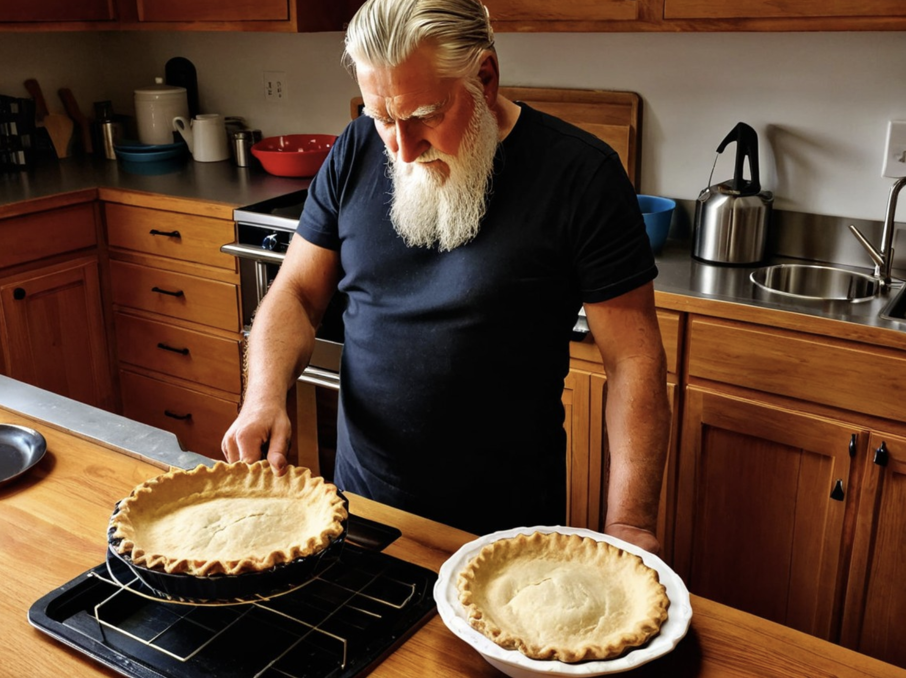

War, Death, and Pecan Pie
< back to recipes

Description
Pecan pie is a pie of pecan nuts mixed with a filling of eggs, butter and sugar (typically corn syrup).[1] Variations may include white or brown sugar, cane syrup, sugar syrup, molasses, maple syrup, or honey.
Ingredients
- Dark Corn Syrup
- Eggs
- Pecans
- Vanilla
- Salt
Steps
- Make the pie crust. As always, use my favorite homemade pie crust. This is the same crust you can use when making mini pecan pies too! It needs to chill in the refrigerator for at least 2 hours before rolling out, so I always make it the night before.
- Roll out the pie crust. You’re aiming for a pie dough circle 12 inches in diameter. Carefully place the dough into a 9-inch pie dish.
- Spread the pecans inside the pie crust.
- Whisk together remaining ingredients. Pour over pecans.
- Bake. I like to place a pie crust shield on top of the pie edges to prevent them from browning too quickly. If you find the whole pie is browning too quickly, tent a piece of aluminum foil over the whole pie.
- Slice and serve. The pie is delicious warm or at room temperature. Top with whipped cream or ice cream.